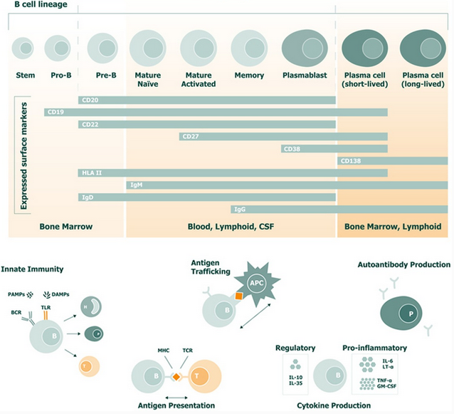

B-lymfocyten
B-lymfocyten, of B-cellen, zijn witte bloedcellen die verantwoordelijk zijn voor het aanmaken van antilichamen, waarmee ze lichaamsvreemde stoffen zoals virussen, bacteriën en zelfs kankercellen bestrijden. Samen met T-cellen maken ze deel uit van de lymfocyten. B-cellen reageren op antigenen (stoffen die het lichaam als vreemd herkent) door antilichamen te produceren die deze lichaamsvreemde stoffen neutraliseren (Cleveland Clinic, z.d.).
Er zijn twee soorten B-cellen:
- Plasmacellen: Deze cellen produceren antilichamen die het lichaam helpen bij het bestrijden van infecties.
- Geheugen B-cellen: Deze cellen zorgen ervoor dat het lichaam sneller kan reageren als het opnieuw wordt blootgesteld aan hetzelfde antigen. Dit vormt de basis van immuniteit tegen herhaalde infecties (Cleveland Clinic, z.d.).
Link met multiple sclerose (MS)
Volgens Comi et al. (2021) spelen B-cellen een rol bij de pathogenese van MS door:
- Het presenteren van antigenen aan T-cellen en mogelijk het aansteken van de autoproliferatie van T-cellen die verantwoordelijk zijn voor het aanvallen van hersencellen. Dit zou kunnen gebeuren door geheugen B-cellen.
- De productie van pro-inflammatoire cytokinen en chemokines die ontstekingen bevorderen.
- De productie van oplosbare toxische stoffen die bijdragen aan schade aan oligodendrocyten en neuronale schade.
- Het dienen als reservoir voor Epstein-Barr virus (EBV), wat verband houdt met de ontwikkeling van MS.
Hieronder is een overzicht te zien van de verschillende stadia van een B-cel en waar de verschillende stadia voorkomen in het lichaam. Ook is er een visualisatie te zien van de verschillende rollen van B-cellen.

Bronnen
- Cleveland Clinic. (z.d.). B cells. https://my.clevelandclinic.org/health/body/24669-b-cells
- Comi, G., Bar-Or, A., Lassmann, H., Uccelli, A., Hartung, H. P., Montalban, X., Sørensen, P. S., Hohlfeld, R., Hauser, S. L., & Expert Panel of the 27th Annual Meeting of the European Charcot Foundation (2021). Role of B Cells in Multiple Sclerosis and Related Disorders. Annals of neurology, 89(1), 13–23. https://doi.org/10.1002/ana.25927